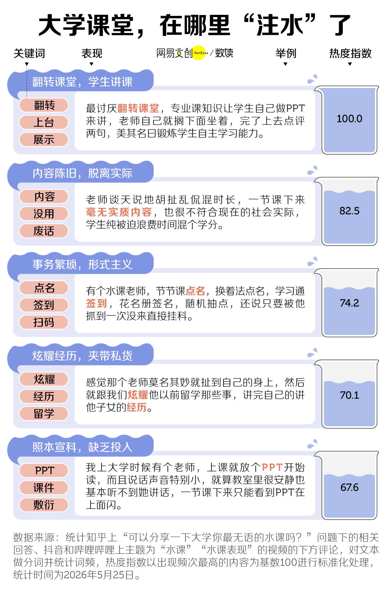
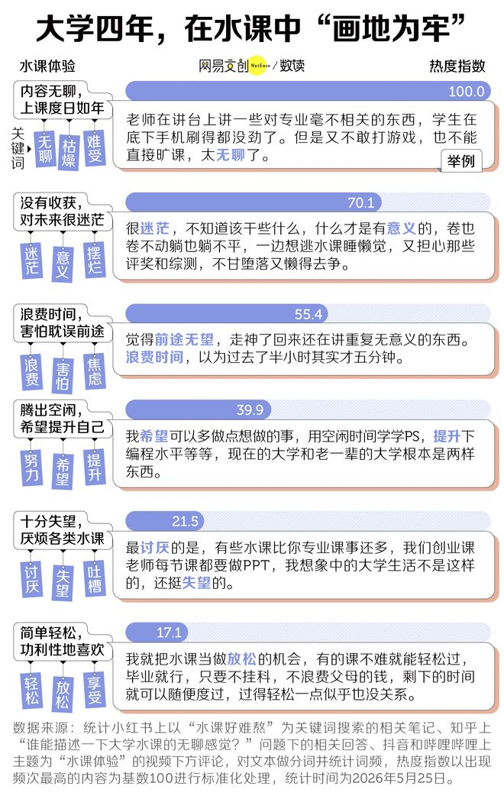

大学课堂，越来越像一场大型角色扮演。
有对着老旧 PPT 逐字念稿的朗读派；有偏爱分享人生故事，课件沦为摆设的阅历派；还有主打分组讨论，讲课全靠学生发挥的互动派……似乎只有解锁这几种风格的老师，四年求学才算完整。
更有意思的是，站在台上的老师中，不乏学术卷王，教室里的划水和科研上的高产，在他们身上达成了奇妙的和解。
为什么能在顶级期刊发论文，带着学生拼竞赛的老师，课堂评价判若两人？让学生们频频吐槽的“水课”，又是怎么变得越来越常见了？

长期浸泡在“水课”里，大学生的心态也悄然来了个180度大转弯。刚进大学时，渴望学到点什么的满怀期待已不复存在，如今选课的画风，早成了“避雷！哪个课事少分高？”

可奇怪的是，那些被学生私下吐槽的水课老师，翻开简历却往往是另一番光景。他们或许是某个领域的学术大佬，手握国家级科研项目，能在学术会议上侃侃而谈，论文发得风生水起。
同一个名字，在科研领域冲风云，在讲台上却像掉了线。人还是那个人，怎么换个场地，表现就天差地别了？
 ↑
↑